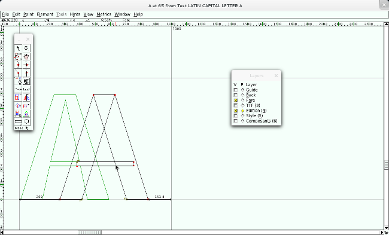
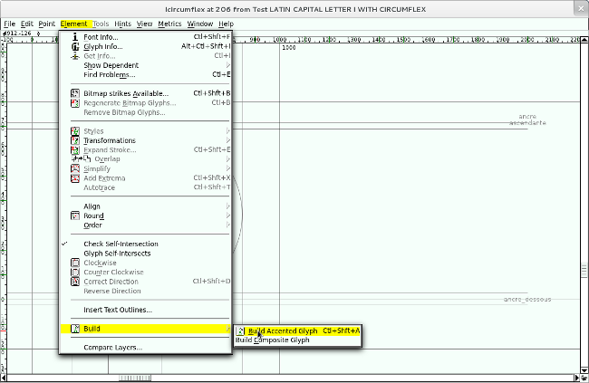
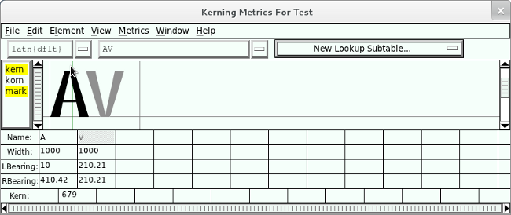

Comment créer une fonte
Pour créer une fonte, il faut :
- Définir ou concevoir un style et réaliser quelques ébauches à partir de quelques caractères-clés – phase de préparation ;
- Dessiner les caractères, soit dans un logiciel de dessin vectoriel (approche indirecte), soit directement dans le logiciel de création de fonte (approche directe) – phase de création ;
- Produire la fonte, c'est-à-dire transformer la suite de caractères en un fichier unique utilisable avec n'importe quel autre logiciel – phase de production.
Préparation
Pour les premiers dessins, on peut s’attaquer à l’alphabet par groupe de lettres similaires. Il se peut que votre fonte n’ait besoin que des minuscules ou que des majuscules.
Choix du style
Il convient de déterminer ici les détails qui donnent son identité à la fonte. Ceux-ci se retrouvent dans les caractères ou les parties de caractères similaires (détails des angles, fûts, jonctions, panses, pointes ou empattements).
Selon l’utilisation prévue ou envisagée, vous pouvez choisir différents types de dessins de fontes :
- Pour du titrage, les restrictions imposées pour la lisibilité sont beaucoup moins importantes et vous permettent plus de détails ainsi que plus de fantaisie.
- Pour du texte courant, le trait peut être plus large et le détail moins important, avec une latitude graphique moindre, en raison de la contrainte de lisibilité.
Toutefois, même si vous décidez de faire une fonte plus originale que les fontes classiques, il est important que le dessin des lettres et symboles donne l’impression qu’ils sont d’une même famille et qu’aucun d’eux ne ressort plus du lot qu’un autre ; sauf si bien sûr vous faites une fonte pour une demande de rançon à partir de coupures de journaux !
Ainsi, il est important d’avoir une cohérence de largeur (condensé ou large), de hauteur d'x (ou œil), de hauteur ou profondeur de jambage. Le recours à des guides ou l'usage de patrons peut vous aider.
Le mieux est de travailler sur quelques lettres d’une casse formant un mot dans une langue que vous utilisez souvent, et ensuite d’y ajouter des majuscules. Ces lettres devront être de catégories différentes pour couvrir les différentes parties des glyphes qui définiront l’identité de votre fonte. Par exemple les mots « fjord », « adhésion », « hamburger », « Ohon », ou même des séquences sans sens comme « gibonkav ». C’est à vous de déterminer quelle sera la première lettre, mais le plus souvent celle-ci dépendra de votre inspiration. Vos premiers dessins doivent être suffisamment larges pour que vous puissiez choisir les détails (dans les jonctions, les empattements). La section suivante présente différents types de lettres de l’alphabet latin regroupées en fonction de leurs caractéristiques anatomiques.
Une fois que vous avez établi un style cohérent, vous pouvez compléter l’alphabet.
Lettres et signes similaires
Les lettres latines peuvent être groupées par catégorie de formes similaires. Les glyphes avec fûts, avec panse, avec contre-poinçon, avec traverse, ou avec diagonales.
Si vous avez une lettre ou plusieurs lettres vous inspirent, vous pouvez, après les avoir dessinées, essayer de compléter votre alphabet avec les glyphes présentant des caractéristiques similaires. Vous pouvez plus facilement utiliser les mêmes détails.
Complétez ensuite l’alphabet de base. Pour que votre fonte soit utilisable dans les langues nécessitant beaucoup de lettres spéciales vous pouvez aussi ajouter les formes crochetées, barrées ou rayées. Pour les formes variantes, celle-ci sont parfois des lettres spéciales mais peuvent simplement être des formes stylistiques alternatives (a ɑ, ou g ɡ). Quelles que soient les lettres que vous ajoutez, il est souvent plus facile d’abord de dessiner les formes simples. Celles-ci vous donneront rapidement un aperçu de la fonte complète et les autres seront plus simples à ajuster si vous modifiez des détails du style de la fonte dans les glyphes complexes.
Minuscules de l'alphabet latin et latin étendu
| lettres de base
|
ags | bdpq | eoc | hmnru | ijl | ft | kvwxyz |
| variantes | ɑɡ | þɂʔ | ǝəɔɛʊʋ | ƞɥµ | ʌɣʒ | ||
| crossé | ɓɠɖɗƥ | ƈ | ɦŋɲ | ɩ | ƒʃƭʈ | ƙƴ | |
| barré ou rayé
|
ⱥǥ | ƀđðᵽ | ȼɇøɵ | ħɍʉ | ɨɉƚ | ŧⱦ | ɏƶ |
- Les lettres à ascendantes ou descendantes, à fût, ou à contre-poinçon - bdpq, hmnru, eoc - sont un bon point de départ.
- Les lettres comme le s, le g à double contre-poinçon, et, dans une moindre mesure, le a roman (par opposition au a cursif ou italique) sont des lettres très caractéristiques et peuvent à elles seules donner une identité à une typo. Mais leur complexité peut en rebuter plus d'un. À ceux-là, nous recommandons de les dessiner à la fin.
Si vous préférez avoir un g à contre-poinçon unique ou un a cursif, ceux-ci sont plus simples à dessiner.
- La lettre ƒ (f crosse) est souvent sous la forme du signe florin (un f crosse italique). Celui-ci est utilisé comme lettre droite dans certaines langues, nous recommandons donc d'avoir la forme droite dans une fonte droite, et la forme italique dans une fonte italique.
Capitales de l'alphabet latin et latin étendu
| lettres de base
|
EFHILT | BDPR | CGOQ | JUS | AKMNVWXYZ
|
| variantes | Ǝ | ÞɁ | ⱭƐƏƆƱƲ | ꞍȠ | ɅƔƷ |
| crossé | ƑƖƬƮɦ | ƁƊƤ | ƇƓ | ŊƝ | ƘŊƝƩƳ |
| barré ou rayé | ɆĦƗȽŦȾ | ɃĐÐƉⱣɌ | ȻǤØƟ
|
ɈɄ | ȺɎƵ |
Le caractère pour le glyphe ɦ majuscule utilisée dans l’alphabet national tchadien n’est pas dans la version actuelle d’Unicode (mais est prévu dans la version suivante; la 6.1.0). Il est possible que d’autres caractères ne soient pas disponibles dans votre ordinateur ou dans celui qui a produit ce document.
Quelques autres caractères
- Ligatures : Æ挜 : ces caractères peuvent être formés par combinaison de plusieurs glyphes ou peuvent faire l'objet d'un dessin pour une forme graphique plus élégante
- Lettres avec signes diacritiques : La majorité des lettres avec diacritiques peuvent être créées en combinant un glyphe de base et de signes diacritiques ; voir « Comment ajouter un glyphe ».
- Signes de ponctuation : Vous devez aussi prévoir de dessiner plusieurs signes de ponctuation ou autres symboles largement utilisés.
Les signes de ponctuation absolument indispensables sont ceux dits de base :
le point, le point-virgule, la virgule, les deux points, le point d’interrogation, le point d’exclamation, les guillemets dactylographiques (") et typographiques français (« ») ou autres (), les apostrophes dactylographiques (') et typographique (’), parenthèses, crochets et accolade.
D'autres caractères sont absolument nécessaires : comme l’esperluette (&), l’arobase (@), l’astérisque (*), le croisillon (#),
Si vous travaillez sur d’autres systèmes d’écriture, vous pouvez catégoriser les lettres dans des groupes similaires, selon leurs formes et leurs parties. Des écritures comme les écritures grecques ou cyrilliques, bien que proches de l’écriture latine, ont parfois besoin d’un style légèrement différent pour correspondre aux habitudes de leurs utilisateurs. Par exemple la lettre majuscule K latine (U+004b) peut avoir un dessin différent de la lettre majuscule К cyrillique (U+051e).
On peut voir le problème de deux façons : vous ne dessinez que les lettres qui vous sont familières afin de ne pas prendre le risque d’avoir des lettres que les utilisateurs ne trouveront pas esthétiques, ou vous les dessinez dans l’espoir que leurs utilisateurs vous aideront à la corriger dans le futur. Là est l’avantage des versions et de la possibilité de fontes dérivées, le temps permettra à votre travail d'être amélioré par vous-même ou par d’autres. voir « Bonnes pratiques des fondeurs ».
Création
Approche indirecte
Il peut sembler étrange de présenter l'approche indirecte avant l'approche directe. Nous faisons de la sorte car les usages des graphistes le suggèrent. Bon nombre de ces derniers ont déjà dessiné des caractères dans leur logiciel de dessin vectoriel favori, mais n'ont jamais franchi le pas d'en faire une fonte.
Ainsi, vous pouvez tout à fait dessiner les caractères de votre future typo dans une application de dessin vectoriel généraliste, comme Inkscape. Les formes produites, dans un fichier source au format SVG, peuvent ensuite être importées dans FontForge pour intégration.
Dans FontForge, l’import se fait caractère par caractère.
Ouvrez la fenêtre du glyphe que vous allez importer en double-cliquant sur son emplacement dans la fenêtre de fonte.
Ouvrez le dialogue d’import dans son menu Fichier > Importer Naviguez les répertoires et sélectionnez le ficher SVG ou EPS du dessin du glyphe
Une fois importée, cette forme vectorielle se trouve dans la case du caractère où elle peut être redimensionnée, déplacée et retouchée.
Inkscape vous permet aussi de créer des fontes au format SVG, qui pourront ensuite être importées dans FontForge pour complément – voir « Outils complémentaires ».
Vous pouvez aussi dessiner vos glyphes sur papier, les numériser à l’aide d'un scanneur ou d’un appareil photo numérique — voir « Outils complémentaires ».
Mise à l'échelle
Au lieu de redimensionner manuellement l’image, il est préférable de la redimensionner avec le menu Élément > Transformations > Transformer. Celui-ci vous permettra de spécifier le facteur de mise à l’échelle exacte. De préférence utiliser la transformation Mise à l’échelle uniforme.
Approche directe
Proportions
Si vous avez modifié une fonte (voir « Comment modifier une fonte »), vous vous êtes déjà familiarisé avec les outils de FontForge, mais certains repères ne sont pas présents lorsqu’il faut créer une fonte à partir de zéro. Vous devrez choisir les proportions de la hauteur de caractère par rapport à la taille du em. Dans FontForge, vous pourrez modifier la taille du em dans la fenêtre des Infos fontes ou directement changer les proportions du dessin.

Guides
Dans FontForge, vous pouvez utilisez les guides pour uniformiser le niveau d’ascendante et celui de descendante, la largeur de fût ou d’épaisseur de traverse à travers les différentes lettres écrites.
Vous pouvez également le faire dans Inkscape – voir « Outils complémentaires ».
FontForge permet d’avoir des guides sur lesquels les points s’aimantent lorsqu’ils sont déplacés. Ces guides de lignes droites horizontales ou verticales peuvent être rajoutés directement en cliquant et tirant le curseur depuis les règles horizontales (pour les guides horizontales) ou verticales (pour les guides verticaux)
Calques
Si vous ouvrez un fichier de fontes existant (.ttf, .otf, .woff, .svg, ou autres), FontForge placera les glyphes dans le calque d'avant-plan appelé Avant (les calques d’avant-plan peuvent être utilisés pour générer des fontes finales). C’est aussi dans ce calque que vous pourrez dessiner ou placer vos glyphes finaux. FontForge met aussi par défaut des calques d’arrière-plan à votre disposition, les calques appelés Arrière et un calque non paramétrable appelé Guide. Avec la fenêtre de glyphes ouverte, vous pouvez les voir.
Le calque Guide peut être utilisé pour dessiner un patron. Les guides ajoutés en tirant les règles horizontales ou verticales sont en fait des lignes connectant deux points ajoutés dans la couche Guide. Des calques supplémentaires peuvent être rajoutés dans le menu Infos fontes > Calques.
Selon votre méthode de travail, vous pouvez largement utiliser le calque Guide avec un patron ou simplement y placer quelques guides. Mais vous pouvez aussi utiliser un patron dans le calque Arrière, mais les points que vous déplacerez dans les autres calques ne seront pas aimantés avec son contenu.
Vous pouvez aussi ajouter d’autres calques dans le menu Infos fontes > Calques si vous désirez par exemple avoir un calque pour les formes alternatives de dessin dont vous ne voulez pas vous débarrasser, ou pour celle que vous désirez générer dans une fonte alternative. Nous recommandons d'utiliser au moins deux calques, l’un contenant le dessin facilement modifiable (un calque de brouillon), et l’autre contenant le dessin final (le calque appelé Avant).
Pour ajouter un calque, cliquez sur Nouveau (ou New), tapez le nom du calque : par exemple Brouillon.
Patrons
Vous pouvez créer des patrons pour dessiner les contours de lettres similaires. Vous pouvez par exemple dessiner les lettres latines o minuscule et b minuscule et copier leurs contours de glyphe dans le calque Guide, ou dans un autre calque d’arrière-plan (Background en anglais).
Production
Afin que la fonte soit utilisable, il convient de procéder à quelques réglages d'ensemble avant de générer le fichier de fonte. Changez le codage réglé par défaut sur l'ISO 8859-1 pour le régler en Unicode
Renseignez le caractère Espace, afin de permettre la séparation des mots.
Laissez les éléments de construction, y compris les composants diacritiques sur un calque d'édition, mais effacez le recouvrement des formes sur le calque actif

Préparez les ancres sur les caractères existants pour anticiper le placement des signes diacritiques. Déterminez à l'aide d'un guide le niveau de placement de l'ancre
img src="_booki/fontes-libres/static/prod_05_ancre_guides_spec.png">
Créez le type d'ancre.
Ajoutez l'ancre au glyphe de base et au glyphe du diacritique
Allez à la case du glyphe composite et cliquez dans le menu Element > Build > Build Accented Glyph

Répétez l'opération pour placer le type d'ancre suivant, si nécessaire. Réglez les approches
Réglez l'approche droite de façon plus importante selon la forme du glyphe. Réglez l'approche gauche de façon identique à l'approche droite si la forme du glyphe est symétrique, sinon adaptez l'approche en fonction de la forme du glyphe. Réglez le crénage, au moins pour les combinaisons de lettres les plus problématiques comme A V par exemple. Le crénage peut se faire par approches de paires pour ajuster les lettres au cas par cas ; par classes pour que les lettres et leurs variantes accentuées notamment soient gérées une fois pour toutes de la même manière. Avant réglage de l'approche de paire A V
Après réglage de l'approche de paire A V (vous remarquez l'apparition d'une valeur dans la case kern)

Activez l'optimisation de la fonte pour l'écran (à défaut, l'autohinting est lancé par défaut au moment de la génération du fichier de fonte)
Astuce : une autre optimisation intéressante et rapide à réaliser consiste à arrondir les coordonnées de la fonte, cela allège considérablement le poids de la fonte. Pour cela, sélectionnez tous les caractères, puis faire Element > Round > To int.
Renseignez le nom et les infos de la fonte (voir « Recommandations de nommage »)
La fonte est prête à être exportée ; il ne reste plus qu'à choisir le format de fichiers (voir « Bonnes pratiques des fondeurs ») et, compte tenu de l'étape 3, à bien spécifier le calque à exporter.

Le menu Imprimer permet de tester le comportement de la fonte. Nous vous recommandons toutefois de tester en réel dans le système d'exploitation et dans quelques logiciels courants, afin de détecter d'éventuels problèmes d'installation ou d'affichage dans les menus.
La suite renvoie à la partie Modification – voir « Comment modifier une fonte ».